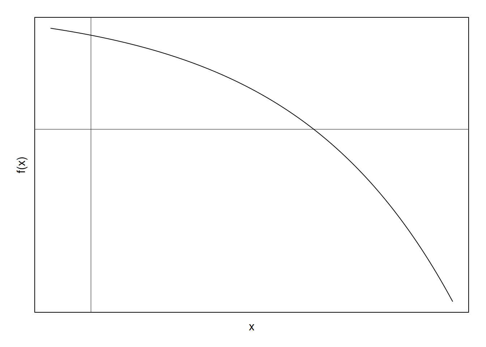
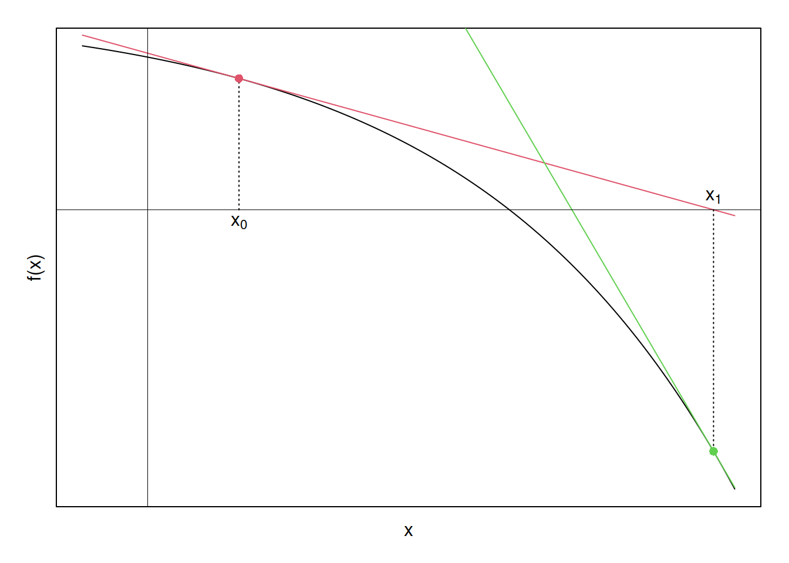

Note: The programming in R follows the math as presented; however, it would never be a good idea to implement IRLS in this way, as the computation presented here is very inefficient.
Note also: If you are unable to view the math properly, e.g. you see a bunch of raw latex code, ensure that any browser extensions (ublock, privacy badger, etc) are not blocking access to mathjax.js, as this site requires mathjax to display correctly.
When reading about GLMs, authors often state that the MLEs of the parameters are found by iteratively reweighted least squares (IRLS). However, texts vary in their mathematical treatment of the process, with some stating that Newton’s method is used, while others give a bit more derivation than others (for some examples, see: Friedman, Hastie, and Tibshirani 2009, 121; Hilbe 2011, Ch. 4; Jorgensen 2006; Long 1997; Nelder and Wedderburn 1972, 372–74; Stirling 1984). Thus, the purpose of this page is to consolidate several sources on IRLS into a general derivation, followed by specific derivations for logistic and Poisson regression, both with example programming in R.
For a bit of background, IRLS is an iterative method that can (among other things) be used to find the coefficients of a generalized linear model.1 At each iteration, it utilizes weighted least squares until convergence to the vector of maximum likelihood estimates (MLEs). The method relies on the Newton-Raphson algorithm, but is equivalent to Fisher scoring when using the canonical link (e.g., logit for logistic regression, and log for Poisson).2 However, at each iteration of the Newton-Raphson algorithm, IRLS computes the closed-form solution to a weighted least squares problem. Interestingly, then, it takes an optimization problem without a closed-form solution, and turns it into one that does have a solution at each iteration.
In studying the source-code of the glm() function, I found that it was not using quasi-Newton methods (as is mostly the case with optim, nlm, and other optimization packages), but rather glm uses IRLS, leading me to study the algorithm. In fact, when users specify a GLM such as glm(y~x, family=binomial) in R, the underlying glm.fit routine makes a call to C, which then makes a call to FORTRAN, with FORTRAN finally running the IRLS algorithm (This link has a deep exposition on the process, for those interested). Thus, despite the fact that MLEs can often be found by Newton’s method, Newton’s method can cleverly be re-written as a familiar weighted least-squares problem, which I did not previously know.
As has already been discussed, the underlying machinery of IRLS is the Newton-Raphson algorithm. Due to this fact, I first review Newton’s method for finding the zeros of a function, the results of which are easily ported over to a general derivation of the IRLS algorithm.
Suppose we have the following function:

and we want to approximate the location at which it crosses the x-axis. That is, we want to find the zero, or root of the function, preferably without having to use the quadratic equation or some other analytic method (indeed, we often cannot find a closed-form solution in the case of GLMs). We can turn to Newton’s method to do so.
In addition to the above function, \(f(x)\), suppose that we have a single point \((x_0,f(x_0))\) available to us. The point \(x_0\) is often just a guess about the root, with the corresponding function evaluation \(y_0=f(x_0)\). Because we are given the function in this scenario, we then know from calculus that the slope of the function at this point is \(m=f'(x_0)\). So we have a point on the function, \(y_0 = f(x_0)\), and the slope at that point \(m = f'(x_0)\). We can then linearly approximate the function using the point-slope form of the tangent at \((x_0,f(x_0))\):
\[\begin{align} y-f(x_0) &= f'(x_0)(x-x_0) \nonumber \\ \nonumber \\ \implies y &= f(x_0) + f'(x_0)(x-x_0) \label{newton} \\ \end{align}\]
As an alternative to the point-slope view, we could look at this as a Taylor series expansion of \(f(x)\) about the point \(x_0\), where we simply drop the higher order polynomials altogether. The Taylor Series view will become important when applying the above to ML estimation.
Looking at this process graphically, suppose we select an arbitrary point \(x_0\), and draw its corresponding linear approximation to \(f(x)\):
Glancing at the plot, it looks like the point at which the red tangent intersects the x-axis is somewhat closer to the original function’s zero than is the initial guess, \(x_0\). So, what if we updated our guess about where the zero is, from \(x_0\) to \(x_1\), where \(x_1\) is the point where the original red tangent intersects the x-axis? Lets find out.
First, we have the equation for the red line; thus, we can obtain the x-intercept by solving for \(x=x_1\) in equation \ref{newton}:
\[\begin{align} y &= f(x_0) + f'(x_0)(x-x_0) \nonumber \\ \nonumber \\ \implies 0 & = f(x_0) + f'(x_0)(x_1-x_0) \nonumber \\ \nonumber \\ x_1 &= x_0 - \dfrac{f(x_0)}{f'(x_0)} \end{align}\]
Now that we have \(x_1\), we can obtain the corresponding tangent/linear approximation to \(f(x)\), but this time at \(f(x_1)\). Graphically, then:

Now a pattern is emerging. The \(x\)-intercepts of the tangent lines seem to be moving closer to the \(x\)-intercept of \(f(x)\), which is what we ultimately want to find. Perhaps if we continue this process—finding tangents, finding their \(x\)-intercepts, and using these \(x\)-intercepts to find new tangents—until the \(x\)-intercepts stop changing by some tolerance limit, we will converge to the zero of the function. Graphically, carrying this process (nearly)3 to its limit yields the following set of points:
To verify that the algorithm converges, the function here is \(f(x) = -e^x + 4\). Solving for the zero analytically yields \(\ln(4) = 1.3862944\). The below R-code shows that the Newton Method correctly arrives at this solution:
# fns
fn = function(x) -exp(x) + 4
fprime = function(x) -exp(x)
# function that returns x-intercepts at successive newton iterations. Wont
# work on multi-dimensional problems
newt = function(x0, fn, fprime, itmax = 10, tol = 0.001) {
xint = function(x) x - fn(x)/fprime(x)
res = vector()
res[1] = x0
i = 1
while (i <= itmax) {
i = i + 1
if (i%%5 == 0)
message("Iterating...", i, "\n")
res[i] = xint(res[i - 1])
if (abs(res[i] - res[i - 1]) < tol)
break
if (i == itmax) {
warning("Stopping value of intercept:", res[i], "\n")
stop("Maximum iterations reached prior to convergence.")
}
}
return(list(all_ints = res, final_val = tail(res, 1)))
}
# point
x0 = 0.35
newt(x0, fn = fn, fprime = fprime)## Iterating...5## $all_ints
## [1] 0.350000 2.168752 1.626033 1.412866 1.386644 1.386294
##
## $final_val
## [1] 1.386294
Now that we’ve reviewed Newton’s method (a.k.a., Newton-Raphson), we might wonder why this is useful for maximum likelihood estimation. In MLE we want to find the parameter vector that maximizes the log-likelihood function (i.e., \(\mathop{\arg \max}_\theta\ln\mathcal{L}(\theta|X)\)). From basic calculus we know that to do so we simply take the first derivative of the likelihood function, set this equal to zero, and solve this first order condition for \(\theta\). However, in most instances of estimating generalized linear models, a closed form solution does not exist due to the presence of transcendental functions. Thus, a non-analytic solution is required, and Newton’s method provides one means of arriving at such a solution.
Proceeding with the general derivation, suppose we have a likelihood function for a generalized linear model, and we take its natural logarithm:
\[\begin{align} \mathcal{L}(\boldsymbol{\beta}| \boldsymbol{X}, \boldsymbol{y}) &= \prod_{i=1}^n f(y_i | \boldsymbol{x}_i, \boldsymbol{\beta}) \nonumber \\ \implies \ln\mathcal{L}(\boldsymbol{\beta}| \boldsymbol{X}, \boldsymbol{y}) &= \sum_{i=1}^n \ln f(y_i|\boldsymbol{x}_i, \boldsymbol{\beta}) \label{like} \end{align}\]
where:
\(f(\cdot)\) is the marginal probability density function
\(\boldsymbol{\beta}\) is the \(k\times 1\) vector of parameters to be estimated
\(\boldsymbol{X}\) is the \(n\times k\) matrix of covariates with \(\boldsymbol{x}_i\) being a \(1 \times k\) observation vector
\(\boldsymbol{y}\) is an \(n\times 1\) vector of outcomes
And \(n\) is the number of observations, \(i\).
We then want to find:
\[\begin{align*} \mathop{\arg \max}_\beta [\ln\mathcal{L}(\boldsymbol{\beta}| \boldsymbol{X}, \boldsymbol{y})] \end{align*}\]
by solving
\[\begin{align} \dfrac{\partial}{\partial \beta_j}(\ln\mathcal{L}) = 0 \quad \forall \quad \beta_j, \quad j \in(1,2,...,k) \label{foc} \end{align}\]
Just as we wanted to find the zeros of a function in the preceding review of Newton’s Method, we want to do so as well in equation \ref{foc}, but now we are finding the zeros of the first derivative instead of the original function. That is, we want to find the values of \(\beta=\hat\beta\) where the gradient is zero. This location will be a local extremum of the likelihood, and can be arrived at by Newton’s method.
Specifically, we take the gradient of the log-likelihood with respect to \(\beta\). Since we want to find the zeros of this gradient as in the preceding Newton review, we take its Taylor series expansion, again ignoring higher order polynomials in order to linearize the gradient:
\[\begin{align*} \nabla l(\boldsymbol{\beta}) \approx \nabla l(\boldsymbol{b}_0) + \boldsymbol{\mathcal{H}}(\boldsymbol{b}_0)(\boldsymbol{\beta }- \boldsymbol{b}_0) \end{align*}\]
where:
\(\boldsymbol{b}_0\) is an initial \(k \times 1\) guess about the parameter vector
\(\nabla l (\boldsymbol{b}_0)\) is the \(k \times 1\) gradient vector of the log-likelihood evaluated at \(b_0\)
And \(\boldsymbol{\mathcal{H}}(\boldsymbol{b}_0)\) is the \(k \times k\) Hessian of the log-likelihood, similarly evaluated at \(b_0\).
We can then re-arrange this as in the preceding Newton review in order to get an updated guess about the optimal solution. That is, setting the LHS to zero and solving for \(\beta\) below (equivalent of finding the \(x\)-intercept of the tangent in the Newton example):
\[\begin{align} \nabla l(\boldsymbol{\beta}) &= \nabla l(\boldsymbol{b}_0) + \boldsymbol{\mathcal{H}}(\boldsymbol{b}_0)(\boldsymbol{\beta }- \boldsymbol{b}_0) \nonumber \\ \nonumber \\ \implies \boldsymbol{\beta }&= \boldsymbol{b}_0 - [\boldsymbol{\mathcal{H}}(\boldsymbol{b}_0)]^{-1} \cdot \nabla l(\boldsymbol{b}_0)\label{newton:glm} \end{align}\]
Recalling from the previous example of Newton’s method, \(\boldsymbol{\beta}\) in \ref{newton:glm} is the equivalent of the \(x\)-intercepts of the tangent lines. That is, \(\beta\) reflects our new guess for the solution to equation \ref{foc}, and therefore the new point about which we will expand the gradient of the log-likelihood. Thus, re-writing \(\boldsymbol{\beta}\) on the LHS of \ref{newton:glm} as \(\boldsymbol{b}_1\) for clarity:
\[\begin{align} \boldsymbol{b}_1 &= \boldsymbol{b}_0 - [\boldsymbol{\mathcal{H}}(\boldsymbol{b}_0)]^{-1} \cdot \nabla l(\boldsymbol{b}_0) \end{align}\]
And lastly, as with the previous example of Newton’s method, we simply iterate until the old and new guesses differ by less than some constant. Because the guesses are often vectors, this difference takes the form of the Euclidean distance between the two vectors. That is, if \(\left\lVert \boldsymbol{b}_{p} - \boldsymbol{b}_{p-1} \right\rVert\), is less than some tolerance limit, the algorithm has converged, where \(p\) indexes the iteration number of Newton’s procedure, and \(||\) denotes the \(l_2\) norm of a vector.
So far we have seen the “iterative” part of IRLS from Newton’s method; what about the “weighted least squares” part? In order to get from Newton’s method to least squares, a bit more information is required. First, recall from calculus that the chain rule can be shown as \[\frac{\mathrm{d}}{\mathrm{d}x}[f(g(x)] = \frac{\mathrm{d}f}{\mathrm{d}g}\frac{\mathrm{d}g}{\mathrm{d}x}\] Then, suppose we have a log-likelihood as defined in equation \ref{like}, denoted as \(l\), and let \(\boldsymbol{x}_{i}\boldsymbol{\beta }\equiv \mu_i\).4 Then it follows from the chain rule and this likelihood that the first and second derivatives with respect to a single parameter, \(\beta_j\), are:
\[\begin{align} \dfrac{\partial l}{\partial \beta_j} &= \sum_{i=1}^n\dfrac{\partial l}{\partial \mu_i}\dfrac{\partial \mu_i}{\partial \beta_j} \nonumber \\ &= \sum_{i=1}^nx_{ij} \dfrac{\partial l}{\partial \mu_i} \qquad\quad \overset{\text{let}}{\equiv} \sum_{i=1}^nx_{ij} f_{\mu_i} \\ \nonumber \\ \nonumber \\ \dfrac{\partial ^2l}{\partial \beta_j^2} &= \sum_{i=1}^nx_{ij} \dfrac{\partial f_{\mu_i}}{\partial \mu_i} \dfrac{\partial \mu_i}{\partial \beta_j} \nonumber \\ &= \sum_{i=1}^nx_{ij}^2 \dfrac{\partial f_{\mu_i}}{\partial \mu_i} \qquad\quad \overset{\text{let}}{\equiv} \sum_{i=1}^nx^2_{ij} f_{\mu_i\mu_i} \end{align}\]
And with respect to the entire parameter vector, \(\boldsymbol{\beta}\), the gradient and Hessian are then:
\[\begin{align} \dfrac{\partial l}{\partial \boldsymbol{\beta}} &= \sum_{i=1}^n\boldsymbol{x}_i^\top f_{\mu_i} \qquad \quad \hspace{1.4ex} = \boldsymbol{X}^\top \boldsymbol{\gamma }\label{grad} \\ \nonumber\\ \nonumber\\ \dfrac{\partial ^2l}{\partial \boldsymbol{\beta}^2} &= \sum_{i=1}^n\boldsymbol{x}_i^\top f_{\mu_i\mu_i} \boldsymbol{x}_i \qquad = - \boldsymbol{X}^\top \boldsymbol{W X} \label{hess} \end{align}\]
where:
\(\boldsymbol{\gamma}\) is an \(n \times 1\) vector, with elements \(\gamma_i = f_{\mu_i}\)
And \(\boldsymbol{W}\) is an \(n \times n\) diagonal matrix with elements \(w_{ii} = -f_{\mu_i\mu_i}\)
Thus, a necessary condition for equation \ref{hess} to be non-singular is \(f_{\mu_i\mu_i} \neq 0\), meaning that the underlying likelihood cannot be linear at any point.
Now we can combine Newton’s method with the preceding gradient and Hessian. That is, Newton’s method as applied to MLE in equation \ref{newton:glm} relies on the gradient and Hessian with respect to \(\boldsymbol{\beta}\) as defined in equations \ref{grad} and \ref{hess}. Each of these is evaluated at an initial guess \(\boldsymbol{b}_0\), and then iteration continues until convergence as previously defined. Thus, supposing we have this initial guess and the above equations equations:
\[\begin{align} \boldsymbol{b}_1 &= \boldsymbol{b}_0 - [\boldsymbol{\mathcal{H}}(\boldsymbol{b}_0)]^{-1} \cdot \nabla l(\boldsymbol{b}_0) \nonumber \\ \nonumber \\ \implies \boldsymbol{b}_1 &= \boldsymbol{b}_0 + (\boldsymbol{X}^\top \hat{ \boldsymbol{W}} \boldsymbol{X})^{-1} \boldsymbol{X}^\top \hat{\boldsymbol{\gamma}} \nonumber \\ \nonumber\\ &= (\boldsymbol{X}^\top \hat{ \boldsymbol{W}} \boldsymbol{X})^{-1} \boldsymbol{X}^\top ( \hat{\boldsymbol{W}}\boldsymbol{Xb}_0 + \hat{\boldsymbol{\gamma}} ) \nonumber \\ \nonumber \\ \text{Now, letting} \nonumber \\ \hat{\boldsymbol{z}} & = \boldsymbol{Xb}_0 + \hat{\boldsymbol{W}}^{-1} \hat{\boldsymbol{\gamma}} \nonumber \\ \nonumber \\ \implies \boldsymbol{b}_1 &= (\boldsymbol{X}^\top \hat{ \boldsymbol{W}} \boldsymbol{X})^{-1} \boldsymbol{X}^\top \hat{\boldsymbol{W}} \hat{\boldsymbol{z}} \label{irls} \end{align}\]
And equation \ref{irls} is clearly a weighted least squares estimator, \(\boldsymbol{b}_1\). Thus, we’ve transformed the Newton-Raphson algorithm to one in which each iteration can be solved using weighted least squares. Accordingly, \(\boldsymbol{b}\) is the equivalent of the \(x\)-intercepts in the previous section on Newton’s method. Each estimated parameter vector, \(\boldsymbol{b}_p\), with \(p \in \mathbb{Z}^{\geq 0}\) being the iteration number, is arrived at using weighted least squares. The next iteration uses this vector in updating to a new guess. Thus, the “hats” over the matrix \(\hat{\boldsymbol{W}}\), and the vectors \(\hat{\boldsymbol{\gamma}}\) and \(\hat{\boldsymbol{z}}\) denote that these quantities rely on estimates \(\boldsymbol{b}_{p-1}\) from the previous iteration, and are therefore estimates themselves.
Summing up, in order to go from this general IRLS derivation to IRLS for specific probability distributions, we need two quantities:
\(\dfrac{\partial l}{\partial \mu_i}\) where \(\mu_i = \boldsymbol{x}_i^\top \boldsymbol{\beta}\)
\(\dfrac{\partial ^2l}{\partial \mu_i^2}\)
As such, for each of the methods considered below, both of these quantities are derived.
Logistic regression is used for binary response variables, and assumes that each observation is distributed independently from a Bernoulli distribution. Thus, it is used to model outcomes with only two possibilities, such as pass or fail, conflict or no conflict, clicked or not clicked, etc.
Proceeding with the IRLS derivation for logistic regression, recall that we need the first and second partials of the log-likelihood, all as defined previously. Formally, define the likelihood for logistic regression as:
\[\begin{align} \mathcal{L}(\boldsymbol{\beta }| \boldsymbol{x}_i, y_i) &= \prod_i f(y_i | \boldsymbol{x}_i, \boldsymbol{\beta}) \nonumber \\ \nonumber \\ &= \prod_i \pi(\mu_i)^{y_i}\cdot \left[1-\pi(\mu_i)^{1-y_i}\right] \nonumber \\ \nonumber \\ \implies \ln \mathcal{L} &= \sum_i y_i \ln \pi(\mu_i) + (1-y_i)\ln(1-\pi(\mu_i)) \label{logistlike} \end{align}\]
where:
\(\boldsymbol{\beta}\), \(\boldsymbol{x}_i\), and \(\mu_i\) are the same as defined previously
\(y_i \sim \mathcal{B}(\pi(\mu_i))\)
And \(\pi(\cdot)\) is the cumulative density function for the logistic distribution.
Expanding on this last point,
\[\begin{align} \pi(\mu_i) &= \dfrac{e^{\mu_i}}{1+e^{\mu_i}} \\ \nonumber \\ &= \left(\frac{e^{-\mu_i}}{e^{-\mu_i}}\right) \cdot \dfrac{e^{\mu_i}}{1+e^{\mu_i}} \nonumber \\ \nonumber \\ &= \frac{1}{1+e^{-\mu_i}} \end{align}\]
With this log-likelihood in hand, it becomes clear that in order to find \(\partial l/\partial \mu_i\), we will need to find \(\partial \pi / \partial \mu_i\). The math will be a bit neater if we find \(\partial \pi / \partial \mu_i\) first, then just substitute this in when finding the partials of the likelihood. For \(\pi(\mu_i)\), it is a straightforward application of the chain and product rules:
\[\begin{align} \frac{\mathrm{d}}{\mathrm{d}\mu_i} (\pi(\mu_i)) &= \frac{\mathrm{d}}{\mathrm{d}\mu_i} \frac{e^{\mu_i}}{1+e^{\mu_i}} \nonumber \\ \nonumber \\ &= \frac{\mathrm{d}}{\mathrm{d}\mu_i} e^{\mu_i}(1+e^{\mu_i})^{-1} \nonumber \\ \nonumber \\ &= e^{\mu_i} (1+e^{\mu_i})^{-1} + (-1)(1+e^{\mu_i})^{-2} (e^{\mu_i})(e^{\mu_i}) \nonumber \\ \nonumber \\ &= \frac{e^{\mu_i}}{1+e^{\mu_i}} - \frac{(e^{\mu_i})^2}{(1+e^{\mu_i})^2} \nonumber \\ \nonumber \\ &= \frac{e^{\mu_i}(1+e^{\mu_i})}{(1+e^{\mu_i})^2} - \frac{(e^{\mu_i})^2}{(1+e^{\mu_i})^2} \nonumber \\ \nonumber \\ &= \frac{e^{\mu_i}}{(1+e^{\mu_i})^2} \nonumber \\ \nonumber \\ &= \frac{e^{\mu_i}}{1+e^{\mu_i}}\frac{1}{1+e^{\mu_i}} \nonumber \\ \nonumber \\ &= \pi(\mu_i)(1-\pi(\mu_i)) \qquad \overset{\text{let}}{\equiv} \pi'(\mu_i) \label{logistprime} \end{align}\]
Now that we have the derivative of \(\pi(\mu_i)\), we can get the derivative of the likelihood (equation \ref{logistlike}) with respect to \(\mu_i\) a bit easier:
\[\begin{align} \dfrac{\partial}{\partial \mu_i} (\ln \mathcal{L}) &= \dfrac{\partial}{\partial \mu_i} \sum_i y_i \ln \pi(\mu_i) + (1-y_i)\ln(1-\pi(\mu_i)) \nonumber \\ \nonumber \\ &=y_i\frac{\pi'(\mu_i)}{\pi(\mu_i)}-(1-y_i)\frac{\pi'(\mu_i)}{1-\pi(\mu_i)} \nonumber \\ \nonumber \\ &=y_i \frac{\pi(\mu_i)(1-\pi(\mu_i))}{\pi(\mu_i)}-(1-y_i)\frac{\pi(\mu_i)(1-\pi(\mu_i))}{1-\pi(\mu_i)} & \small{\text{ (Sub. eq. \ref{logistprime} for $\pi'(\mu_i)$)}} \nonumber \\ \nonumber \\ &=y_i - \pi(\mu_i) \label{logistlikeprime} \end{align}\]
Obtaining the second partial is again straightforward:
\[\begin{align} \dfrac{\partial ^2}{\partial \mu_i^2}(\ln \mathcal{L}) &= \dfrac{\partial}{\partial \mu} \left[y_i - \pi(\mu_i)\right] \nonumber \\ \nonumber \\ &= -\pi(\mu_i)(1-\pi(\mu_i)) \label{logistlikeDprime}\\ &= -\pi'(\mu_i) \nonumber \end{align}\]
Thus, for logistic regression, we have now derived \(f_{\mu_i}\) and \(f_{\mu_i\mu_i}\) as defined in equations \ref{grad} and \ref{hess}. Recalling the application of the chain-rule as discussed in the general derivation section, we then know that \(\nabla \boldsymbol{\beta}\) and \(\mathcal{H}(\boldsymbol{\beta})\) are defined as:
\[\begin{align} \dfrac{\partial l}{\partial \boldsymbol{\beta}} &= \sum_{i=1}^n\boldsymbol{x}_i^\top \left[y_i - \pi(\mu_i)\right] \nonumber \\ \nonumber \\ & = \boldsymbol{X}^\top \left[\boldsymbol{y} - \pi(\boldsymbol{\mu})\right] \\ &= \boldsymbol{X}^\top \boldsymbol{\gamma }\nonumber \nonumber \\ \nonumber \\ \dfrac{\partial ^2 l}{\partial \boldsymbol{\beta}^2} &= - \sum_{i=1}^n\boldsymbol{x}_i^\top \left[\pi(\mu_i)(1-\pi(\mu_i))\right] \boldsymbol{x}_i \nonumber \\ \nonumber \\ &= - \boldsymbol{X}^\top \boldsymbol{W} \boldsymbol{X} \end{align}\]
where all variables are defined as before, but the elements of \(\boldsymbol{\gamma}\) are specifically \(\gamma_i=y_i-\pi(\mu_i)\), and diagonal elements of \(\boldsymbol{W}\) are specifically \(w_{ii} = \pi'(\mu_i) = \pi(\mu_i)(1-\pi(\mu_i))\).
We thus have all of the moving parts required for estimating the coefficients (and standard errors) from logistic regression via IRLS (see equation \ref{irls} and its preceding derivation), and can proceed with programming the algorithm in R.
To get started with programming the IRLS algorithm for logistic regressin, I first define functions for the derivatives \(f_{\mu_i}\) and \(f_{\mu_i\mu_i}\), as found in equations \ref{logistlikeprime} and \ref{logistlikeDprime}:
fu_logistic = function(y, X, b) {
pi = plogis(X %*% b)
as.vector(y - pi)
}
fuu_logistic = function(y, X, b) {
pi = plogis(X %*% b)
return(as.vector(-pi * (1 - pi)))
}Now that we have the derivative functions, below I define the irls function for actually implementing the algorithm. It will take functions that return derivatives of the log-likelihood as arguments, fu and fuu from above, so that when we define other derivatives later on (i.e., for Poisson regression), we can simply input those functions to the already-existing irls function, rather than having to define another irls function. In other words, I’ve written the equivalent of a “general” IRLS function below that takes derivatives as arguments, derivatives which are functions themselves. We can then input any valid data and derivative functions to implement the algorithm.
irls = function(fu, fuu, X, y, method = "logistic", starts = NULL, itmax = 100, tol = 0.001) {
method = match.arg(method, choices = c("logistic", "poisson"))
convergence = 0
iter = 0
if (is.null(starts)) {
b0 = switch(method, logistic = rep(0, ncol(X)), poisson = rep(1, ncol(X)))
} else b0 = starts
if (length(b0) != ncol(X))
stop("Number of starting params is not equal to number of covariates.")
while (iter <= itmax) {
iter = iter + 1
if (iter%%10 == 0)
message("Iterating...", iter)
gamma = fu(y, X, b0) # gamma from equation above
W = diag(-fuu(y, X, b0))
W_inv = diag(-1/fuu(y, X, b0)) #inverse of diag matrix, rather than solving explicitly for inverse.
z = X %*% b0 + W_inv %*% gamma
b1 = solve(crossprod(X, W) %*% X) %*% crossprod(X, W) %*% z
if (sqrt(crossprod(b1 - b0)) < tol)
break
if (iter == itmax) {
stop("Maximum iterations reached prior to convergence.\n Retry using coefficients at termination as starting values:",
paste0(b1, collapse = ", "))
}
b0 = b1
}
par = as.vector(b1) # coefficient vector
covmat = solve(crossprod(X, W) %*% X) # covariance matrix
se = sqrt(diag(covmat)) # standard errors
zscore = par/se
pval = 2 * pnorm(abs(zscore), lower.tail = F)
coefs = cbind(par, se, zscore, pval)
colnames(coefs) = c("Estimate", "Std. Error", "Z-score", "p-value")
rownames(coefs) = colnames(X)
call = match.call()
obj = "Custom IRLS Function"
results = list(coefs = coefs, par = par, covmat = covmat, se = se, zscore = zscore,
pval = pval, niterations = iter, call = call, obj = obj)
class(results) = "irls"
return(results)
}Although we now have a light function to implement IRLS, we have not defined the print method for irls-class objects. Therefore, in the lines below I define the print function for the irls-class object. Note that this is not an ideal print function, but it gets the job done for our purposes.
"print.irls" = function(x) {
cat("", "\n")
cat(x$obj, "\n")
cat("\nCall: ", deparse(x$call), "\n\n")
cat("===============================================================", "\n")
printCoefmat(x$coefs, digits = 4, signif.stars = T)
cat("===============================================================", "\n")
}With the logistic derivative functions, fu_logistic and fuu_logistic, the irls function and its corresponding print function all now defined, we can generate some data, and fit the model and compare it to R’s canned glm function.
Before generating the data, I set the seed for reproducibility. Next, I generate some binary outcome data. Specifically, the data on X are drawn from a multivariate normal distribution (Sigma below) via singular value decomposition (if you are unfamiliar with this approach to simulating from a multivariate normal, you’ll want to check out my other post on the topic, here). The data in X are then used to obtain mu, which is fed through the logistic c.d.f. (plogis) to obtain probabilities. These probabilities, pi below, are input to a Bernoulli distribution (i.e., a binomial with one draw, rbinom below), to obtain the binary outcome variable, y.
set.seed(081360)
####simulate some binary outcome data
##drawing covariates X from multivariate normal via singular value decomposition.
n = 1000
Sigma = matrix(c(0, 1.5, 1.5, 0), nrow=2, byrow=T)
diag(Sigma) = c(2,1)
svd_cov = svd(Sigma)
U = svd_cov$u
D = svd_cov$d
V = svd_cov$v
sqrt_Sigma = U%*%sqrt(diag(D))%*%t(U)
X = matrix(rnorm(n*2), ncol=2)
X = X %*% sqrt_Sigma
X = cbind(1,X)
colnames(X) = c("intercept", "X1", "X2")
B = c(2,-3,3)
mu = X%*%B
pi = plogis(mu)
y=rbinom(n,1,pi)And finally, estimating the model using both the custom irls function, and the canned glm function below shows that indeed our function is identical up to rounding error:
list(irls(fu_logistic, fuu_logistic, X, y, itmax = 50, method = "logistic"), summary(glm(y ~
X + 0, family = "binomial")))## [[1]]
##
## Custom IRLS Function
##
## Call: irls(fu = fu_logistic, fuu = fuu_logistic, X = X, y = y, method = "logistic", itmax = 50)
##
## ===============================================================
## Estimate Std. Error Z-score p-value
## intercept 2.1154 0.1297 16.30 <2e-16 ***
## X1 -3.1949 0.2632 -12.14 <2e-16 ***
## X2 3.2900 0.3281 10.03 <2e-16 ***
## ---
## Signif. codes: 0 '***' 0.001 '**' 0.01 '*' 0.05 '.' 0.1 ' ' 1
## ===============================================================
##
## [[2]]
##
## Call:
## glm(formula = y ~ X + 0, family = "binomial")
##
## Deviance Residuals:
## Min 1Q Median 3Q Max
## -2.7770 0.1085 0.3213 0.5828 1.8450
##
## Coefficients:
## Estimate Std. Error z value Pr(>|z|)
## Xintercept 2.1154 0.1297 16.30 <2e-16 ***
## XX1 -3.1949 0.2632 -12.14 <2e-16 ***
## XX2 3.2900 0.3281 10.03 <2e-16 ***
## ---
## Signif. codes: 0 '***' 0.001 '**' 0.01 '*' 0.05 '.' 0.1 ' ' 1
##
## (Dispersion parameter for binomial family taken to be 1)
##
## Null deviance: 1386.29 on 1000 degrees of freedom
## Residual deviance: 722.79 on 997 degrees of freedom
## AIC: 728.79
##
## Number of Fisher Scoring iterations: 6
Poisson regression is typically used to model event counts, such as number of mutations, number of conflicts, number of calls, and occasionally times (e.g., wait times at a Doctor’s office, in minutes). Thus, the response is a non-negative integer, \(y \in \mathbb Z^{\ge 0}\). The Poisson mass function function (using the canonical link) is then given as:
\[\begin{align*} \Pr(Y=y_i) &= \dfrac{\lambda^{y_i} e^{-\lambda_i}}{y_i!} & \text{where} \quad \lambda = e^{\mu_i} = \mathbb{E}(Y) \end{align*}\]
With the resulting likelihood, and log-likelihood being:
\[\begin{align*} \mathcal{L}(\beta|\boldsymbol{x}_i, y_i) &= \prod_{i=1}^n \Pr(Y=y_i) = \prod_{i=1}^n \dfrac{\lambda^y_i e^{-\lambda_i}}{y_i!} \\ \\ \ln\mathcal{L}(\beta|\boldsymbol{x}_i, y_i) &= \sum_{i=1}^ny_i \ln \lambda - \lambda - \ln y_i! \end{align*}\]
As with Logistic regression, in order to program the IRLS algorithm for Poisson regression, we will need both \(\partial l/\partial \mu_i\) and \(\partial^2l / \partial\mu_i^2\). That is, the first and second partials of the log-likelhiood w.r.t \(\mu_i\). Deriving these:
\[\begin{align*} \dfrac{\partial l}{\partial \mu_i}(\ln\mathcal{L}) &= y_i\frac{\lambda}{\lambda} - \lambda \nonumber \\ &= y_i - e^{\mu_i} \\ \nonumber \\ \dfrac{\partial ^2l}{\partial \mu_i^2} &= -\lambda \\ &= - e^{\mu_i} \end{align*}\]
Now that we have these quantities, we can utilize equations \ref{grad} and \ref{hess} to get \(\partial l / \partial \boldsymbol{\beta}\) and \(\partial^2 l / \partial \boldsymbol{\beta}^2\):
\[\begin{align*} \dfrac{\partial l}{\partial \boldsymbol{\beta}} &= \sum_{i=1}^n\boldsymbol{x}_i^\top(y_i-\lambda_i) \\ \\ &= \boldsymbol{X}^\top(\boldsymbol{y} - \boldsymbol{\lambda}) \\ & = \boldsymbol{X}^\top \boldsymbol{\gamma }&\text{where} \quad \gamma_i = y_i - e^{\mu_i} = f_{\mu_i} \\ \\ \dfrac{\partial ^2l}{\partial \boldsymbol{\beta}^2} & = \sum_{i=1}^n-e^{\mu_i}\boldsymbol{x}_i^\top \boldsymbol{x}_i \\ \\ & = -\boldsymbol{X}^\top\boldsymbol{WX} &\text{where} \quad w_{ii} = e^{\mu_i} = -f_{\mu_i\mu_i} \end{align*}\]
Now that we have the general irls function defined (see section on logistic regression programming in R), all we have to do in order to estimate the Poisson parameters is define the derivative functions that have just been derived, and then generate some data from a Poisson distribution (using the same covariates as were used in the section on logistic regression).
y = rpois(n, exp(mu))
fu_poisson = function(y, X, b) {
lambda = exp(X %*% b)
as.vector(y - lambda)
}
fuu_poisson = function(y, X, b) {
lambda = exp(X %*% b)
as.vector(-lambda)
}
# Generate data
lambda = exp(mu)
y = rpois(n, lambda)
irls(fu_poisson, fuu_poisson, X, y, method = "poisson")## Iterating...10##
## Custom IRLS Function
##
## Call: irls(fu = fu_poisson, fuu = fuu_poisson, X = X, y = y, method = "poisson")
##
## ===============================================================
## Estimate Std. Error Z-score p-value
## intercept 2.01196 0.01084 185.6 <2e-16 ***
## X1 -2.98936 0.01130 -264.6 <2e-16 ***
## X2 2.98942 0.01639 182.4 <2e-16 ***
## ---
## Signif. codes: 0 '***' 0.001 '**' 0.01 '*' 0.05 '.' 0.1 ' ' 1
## ===============================================================summary(glm(y ~ X + 0, family = "poisson"))##
## Call:
## glm(formula = y ~ X + 0, family = "poisson")
##
## Deviance Residuals:
## Min 1Q Median 3Q Max
## -3.9108 -0.8295 -0.1604 0.5905 2.7817
##
## Coefficients:
## Estimate Std. Error z value Pr(>|z|)
## Xintercept 2.01196 0.01084 185.6 <2e-16 ***
## XX1 -2.98936 0.01130 -264.6 <2e-16 ***
## XX2 2.98942 0.01639 182.4 <2e-16 ***
## ---
## Signif. codes: 0 '***' 0.001 '**' 0.01 '*' 0.05 '.' 0.1 ' ' 1
##
## (Dispersion parameter for poisson family taken to be 1)
##
## Null deviance: 303117.10 on 1000 degrees of freedom
## Residual deviance: 988.45 on 997 degrees of freedom
## AIC: 4673.1
##
## Number of Fisher Scoring iterations: 4And again, we see that the custom irls function is identical to that of the canned glm function, up to rounding error.
It is also used in robust regression, and has other applications in numerical optimization. Depending on the loss function chosen, this can amount to minimizing the residuals over the \(l_1\)-norm rather than \(l_2\) (or any other norm, technically).↩︎
The difference between Newton-Raphson and Fisher scoring is the use of the observed Hessian in the former, while the latter relies on the expected Hessian, thereby reducing the number of computations required for Fisher scoring. The reason for this difference in computations is because we can write the Fisher information as the product of first derivatives. As there are two equivalent definitions of the Fisher information, one being the expectation of the product of first derivatives, the other being the negative expectation of the second derivatives, Fisher scoring can rely only on first derivatives.↩︎
This graphic does not actually include all tangent lines for clarity, as the graph gets cluttered very quickly. However, the code for these plots is available on github if anyone would like to see the actual numerical results.↩︎
This is typically referred to as the linear predictor in a GLM, often denoted \(\eta\), elsewhere.↩︎